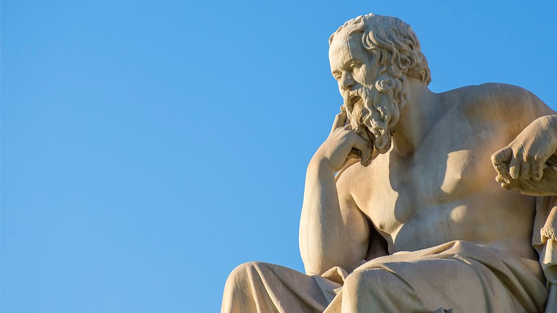

Here we will begin our studies on western thought. From ancient Athens to 19th century Europe, we will discuss the ideas that shaped our understanding of reality, knowledge, ethics, and existence.

Philosophy is the study of fundamental questions concerning existence, knowledge, values, reason, mind, and language
This guide will cover the basics of the western canon regarding philosophy.
Why Study Philosophy?
John Green discusses how philosophy teaches critical thinking, logical reasoning, and helps us examine life's fundamental questions.
Recommended Reading Order
1. Plato's Republic (Book VII - Allegory of the Cave)
2. Descartes' Meditations (especially 1 & 2)
3. Hume's Enquiry (Section IV on causation)
4. Kant's Prolegomena
5. Nietzsche's Genealogy of Morals
Ancient Philosophy (4th Century BCE)
The foundation of Western philosophy begins in ancient Athens with two towering figures.
Plato (428-348 BCE)
Must Read: The Republic, Symposium, Phaedo
Main Ideas: Theory of Forms - the physical world is a shadow of perfect, eternal Forms. The famous Allegory of the Cave illustrates how most people mistake shadows for reality. Only through philosophy can we ascend to true knowledge.
Legacy: Founded the Academy, established philosophy as a discipline, influenced all subsequent Western thought.
Aristotle (384-322 BCE)
Must Read: Nicomachean Ethics, Politics, Metaphysics
Main Ideas: Rejected Plato's transcendent Forms for immanent forms within things. Developed formal logic, virtue ethics (the Golden Mean), and the concept of eudaimonia (human flourishing).
Legacy: His systematic approach to knowledge influenced science, logic, ethics, and politics for millennia.
The School of Athens - where philosophy was born
Medieval Philosophy (1st-4th Century CE)
Philosophy meets theology as Christian thinkers study faith and reason.
The Bible & Early Christian Thought
Philosophical Significance: Introduced concepts of linear time, personal God, free will, and salvation. The tension between Greek reason and Biblical revelation would define medieval philosophy.
Key Themes: Faith vs. reason, the problem of evil, divine providence, human nature and sin.
St. Augustine (354-430 CE)
Must Read: Confessions
Main Ideas: Synthesized Platonic philosophy with Christianity. Developed theories of time, memory, and the self. His introspective method pioneered the philosophical autobiography.
Famous Quote: "Our hearts are restless until they rest in Thee."
Legacy: Shaped Christian philosophy for over a thousand years.
Early Christian scholars and apostles
Modern Philosophy (17th-18th Century)
The Age of Reason brings new methods and radical doubt.
Must Read: Discourse on Method, Meditations on First Philosophy
Main Ideas: Methodological doubt, doubt everything until you find certainty. "Cogito ergo sum" (I think, therefore I am). Mind-body dualism.
Legacy: Father of modern philosophy, established the centrality of the thinking subject.
Baruch Spinoza (1632-1677)
Must Read: Ethics, Demonstrated in Geometrical Order
Main Ideas: Monism, everything is one substance (God/Nature). Determinism, free will is an illusion. True freedom comes from understanding necessity.
Legacy: Radical thinker who influenced Enlightenment and modern pantheism.
David Hume (1711-1776)
Must Read: An Enquiry Concerning Human Understanding
Main Ideas: Empiricism, all knowledge comes from experience. Skepticism about causation, the self, and induction. Emotions, not reason, drive human behavior.
Legacy: Awakened Kant from "dogmatic slumber," influenced modern skepticism.
Immanuel Kant (1724-1804)
Must Read: Critique of Pure Reason, Prolegomena to Any Future Metaphysics
Main Ideas: Synthesis of rationalism and empiricism. We can only know phenomena (appearances), not noumena (things-in-themselves). Categorical imperative in ethics.
Legacy: Revolutionary "Copernican turn" in philosophy, influenced all subsequent thought.
The Enlightenment
John Green discusses how Enlightenment thinkers revolutionized our understanding of reason, freedom, and progress.
19th Century Philosophy
The century of grand systems and radical critiques of reason.
G.W.F. Hegel (1770-1831)
Must Read: Phenomenology of Spirit
Main Ideas: Dialectical method (thesis-antithesis-synthesis). History as the progressive unfolding of Spirit. The real is rational and the rational is real.
Legacy: Influenced Marx, existentialism, and continental philosophy.
Arthur Schopenhauer (1788-1860)
Must Read: The World as Will and Representation
Main Ideas: The world as we know it is representation, but its essence is blind, irrational Will. Life is suffering, art provides temporary escape.
Legacy: Influenced Nietzsche, Freud, and modernist literature.
Max Stirner (1806-1856)
Must Read: The Ego and Its Own
Main Ideas: Radical individualism - all abstractions (God, State, Humanity) are "spooks" that oppress the unique individual. Proto-existentialist themes.
Legacy: Influenced anarchism and existentialism.
Soren Kierkegaard (1813-1855)
Must Read: Fear and Trembling
Main Ideas: The leap of faith, subjective truth, anxiety and despair as human conditions. Abraham's sacrifice of Isaac as paradigm of faith beyond reason.
Legacy: Father of existentialism, influenced 20th century theology and philosophy.
Friedrich Nietzsche (1844-1900)
Must Read: On the Genealogy of Morals, Thus Spoke Zarathustra
Main Ideas: "God is dead" - critique of Christian morality. Master/slave morality, will to power, eternal recurrence, the Ubermensch.
Famous Quote: "He who fights with monsters should look to it that he himself does not become a monster."
Legacy: Profound influence on 20th century thought, postmodernism, and culture.
The 19th century saw philosophy with modernity and study its discontents
Philosophy's Modern Crisis
How 19th century thinkers challenged the Enlightenment's faith in reason and progress.
Continue Learning
Philosophy involves discourse of ideas and paradigms. Feel free to leave your information to join us in thoughtful discussion.